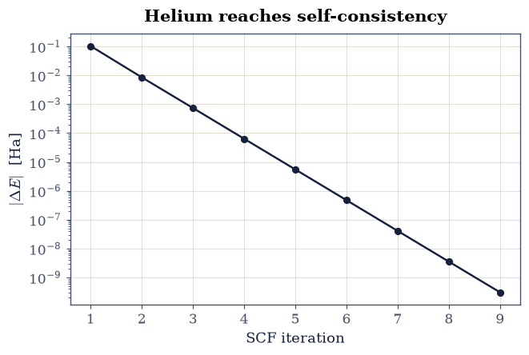
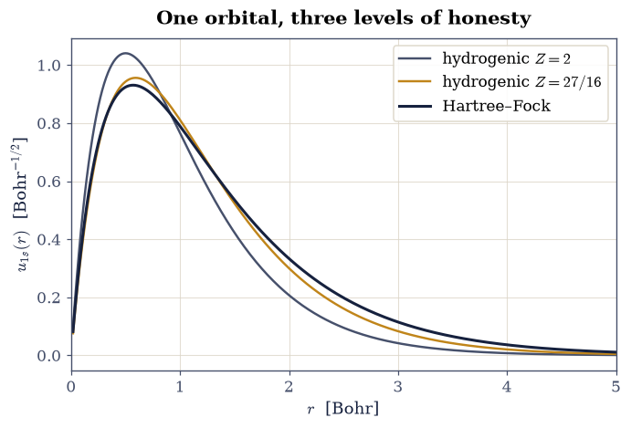
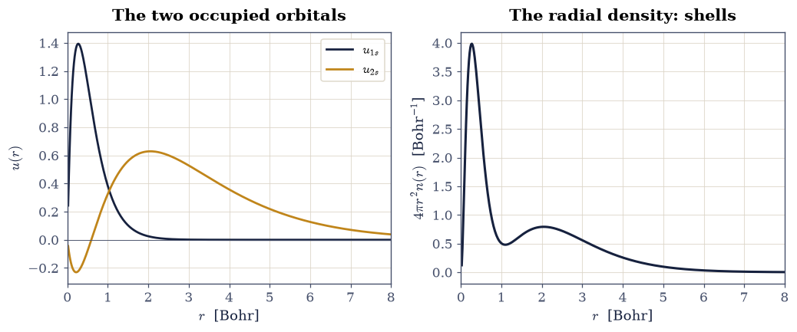
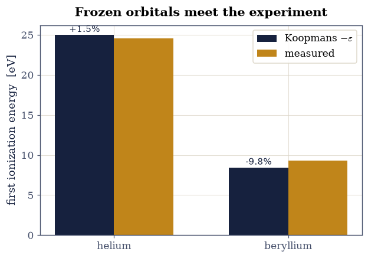
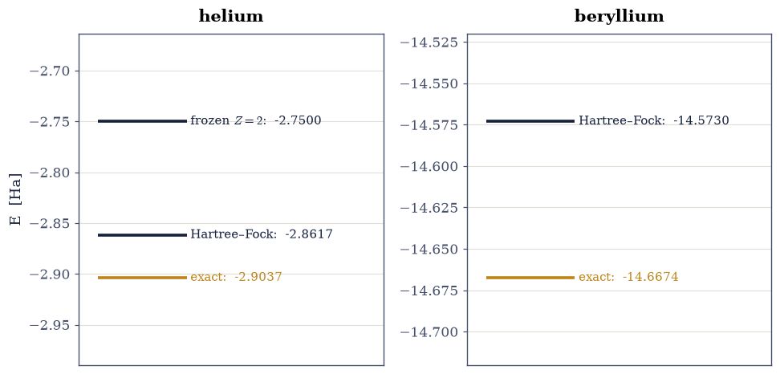

8.3 Hartree–Fock I: Atoms#
Notebook overview#
The laboratory of §8.2 met Hartree–Fock as a three-line special case; this notebook derives the method properly and takes it to real atoms. The idea is the oldest disciplined answer to the wall of §8.1: restrict the wavefunction to a single Slater determinant — the most general state in which electrons are uncorrelated apart from the antisymmetry quantum mechanics forces on them — and let the variational principle pick the best orbitals. What comes out is remarkable machinery. The electron–electron repulsion resolves into two terms with entirely different characters: a classical Hartree term, the electrostatics of the charge cloud, and an exchange term with no classical reading at all, a nonlocal operator born purely from antisymmetry. Making that nonlocality concrete (an actual dense matrix coupling every grid point to every other, built and diagonalized) is this notebook’s central computational move.
The program: assemble the determinant’s energy and certify the radial integrals against closed forms; derive the Hartree–Fock equations and solve helium self-consistently; watch screening emerge in the converged orbital; solve beryllium with the full nonlocal exchange and watch the \(1s/2s\) shell structure appear; test Koopmans’ theorem against measured ionization energies; and close the ledger that §8.1 opened, with correlation energies of real atoms now computed against our own Hartree–Fock numbers. The successor notebooks take the two roads out: the electron gas, where exchange can be done exactly and its pathology exposed (§8.4), and density-functional theory, which trades the nonlocal operator for a local potential and an honest error bar (§8.7).
Conventions (this notebook). Hartree atomic units. All atoms here are closed-shell with \(s\) orbitals only (He: \(1s^2\); Be: \(1s^2 2s^2\)), so every orbital is \(\phi(\mathbf r) = u(r)/(r\sqrt{4\pi})\) with \(u\) on the radial grid \(r_j = jh\), \(h = 25/1400\) Bohr, and the electron–electron kernel reduces to its monopole \(1/r_>\) (the shell theorem of §3.3, quantum edition). Radial integrals use
numpy.trapezoid; the Fock matrix is dense and diagonalized byscipy.linalg.eigh; orbital normalization is \(\int u^2\,dr = 1\).How to read the checks. Each exercise closes with a
validatecall against an independent fact: a closed-form integral, the literature Hartree–Fock limits, the virial theorem, a measured ionization energy. A ✓ is strong evidence; a ✗ is a prompt to locate the discrepancy, not an automatic verdict. Grid energies carry the stated \(O(h^2)\) offset from the exact Hartree–Fock limits (about \(10^{-3}\) relative for beryllium’s compact \(1s\)); the gates say which comparison is meant.Scope. Restricted, closed-shell, \(s\)-only, and solved on a radial grid rather than in a basis. The full Roothaan machinery — open shells, higher angular momenta, and the two-electron integrals over atom-centred functions — belongs to quantum-chemistry texts; Szabo & Ostlund [SO96], Ch. 3, is the canonical reference and carries every derivation sketched here to completion. One piece of it does arrive later in this volume: §8.18 builds an atom-centred Gaussian basis from its integrals, on a single electron, and measures the error that such a basis invents and a grid cannot. Koopmans’ original paper is [Koo34]; the Hartree–Fock limits quoted are the standard numerical values (Szabo & Ostlund, Table 3.6 and references therein).
Theory in brief#
The energy of a Slater determinant#
A determinant \(\Phi = \mathrm{det}[\phi_1\cdots\phi_N]/\sqrt{N!}\) of orthonormal spin-orbitals is the antisymmetrized product state of §6.20. Taking the expectation value of the Hamiltonian in it is bookkeeping with a beautiful outcome (the Slater–Condon rules; Szabo & Ostlund [SO96], §2.3, work every case): the one-body terms sum over occupied orbitals, and the two-body repulsion contributes two kinds of integral,
\(J_{ij}\) is classical: the Coulomb energy of two charge clouds, the term Hartree wrote down by electrostatic intuition in 1928. \(K_{ij}\) has no classical picture: it swaps the orbitals between the two integration points, exists only between like-spin pairs (the \(\delta_{\sigma_i\sigma_j}\)), and enters with a minus sign — antisymmetry keeps like-spin electrons apart, lowering their repulsion. Note \(K_{ii} = J_{ii}\): the exchange term exactly cancels the unphysical interaction of an electron with itself, a bookkeeping grace §8.7 will find painfully absent in approximate functionals.
The Hartree–Fock equations, Koopmans, Brillouin#
Minimizing Eq. 867 over orbitals, with Lagrange multipliers enforcing orthonormality (the same constrained-variation pattern as §6.22), yields the canonical Hartree–Fock equations
where \(\hat J_j\) multiplies by the potential of orbital \(j\)’s charge and \(\hat K_j\) is the nonlocal exchange operator, \((\hat K_j \phi)(\mathbf r) = \phi_j(\mathbf r)\!\int \phi_j^*(\mathbf r')\phi(\mathbf r')/|\mathbf r - \mathbf r'|\,d\mathbf r'\): its action at \(\mathbf r\) requires \(\phi\) everywhere. Because \(\hat F\) depends on its own eigenfunctions, the equations demand self-consistency, the fixed-point loop of §8.2 Exercise 6.
Two theorems ride along free. Koopmans: removing an electron from orbital \(i\) without letting the others relax costs exactly \(-\varepsilon_i\) — so occupied orbital energies approximate ionization energies, with two neglected effects (orbital relaxation, which lowers the true cost, and correlation, which raises it) partially cancelling [Koo34]. Brillouin: the converged determinant has vanishing Hamiltonian matrix elements with all single excitations — the variational optimum has used up everything one-orbital changes can offer, so the missing physics (correlation) begins at double excitations. Both are proved in three lines from Eq. 867; Szabo & Ostlund [SO96], §3.3, spell them out.
The radial reduction, and this notebook’s atoms#
For closed-shell atoms with only \(s\) orbitals, every \(\phi_i\) is spherically symmetric, \(\phi = u(r)/(r\sqrt{4\pi})\), and the Coulomb kernel collapses to its monopole: \(1/|\mathbf r - \mathbf r'| \to 1/r_>\) after angular integration (the quantum shell theorem — a sphere of charge acts from its center). The working equations on the radial grid are then
and the whole Fock operator is an \(N \times N\) matrix: tridiagonal kinetic part, diagonal external and Hartree potentials, and the exchange as the dense rank-mixing matrix \(X_{ab} = \sum_j u_j(r_a)\,(1/r_>)_{ab}\,u_j(r_b)\,h\). Helium (\(1s^2\), opposite spins) has the special grace that its only exchange integral is \(K_{11} = J_{11}\), making the effective potential local; beryllium (\(1s^2 2s^2\)) has genuine \(1s\)–\(2s\) exchange and requires the full nonlocal matrix — which is precisely why it is in this notebook.
Setup#
Data and instruments: the fixed radial grid, the monopole Coulomb kernel that the shell theorem hands us, the Hartree-to-electronvolt conversion of §8.1, the tridiagonal kinetic matrix built from scratch in §6.10, and the closed-form hydrogenic orbital that starts every loop. The notebook’s own machinery is not here: you write the Coulomb integral \(J_{ij}\) in Exercise 1, the exchange integral \(K_{ij}\) in Exercise 4, and the two self-consistent loops that stand on them in Exercises 2 and 4.
The Setup below holds this notebook’s data and instruments — nothing you are asked to build. It is collapsed so the building stays yours; expand it whenever you want the details.
Exercise 1 — The determinant’s energy, certified against closed forms#
Before any self-consistency, the machinery of Eq. 867 must prove itself on integrals whose values are known exactly. For hydrogenic \(1s\) orbitals the two building blocks have famous closed forms: the one-body energy in a bare charge-\(Z\) potential is \(\langle \hat h \rangle = Z^2/2 - Z^2 = -Z^2/2\), and the Coulomb self-repulsion is \(J_{1s,1s} = \tfrac58 Z\) — the integral behind the \(27/8\) of the helium curve in §8.1 (Szabo & Ostlund [SO96], §1.3, derive it). Their combination for helium with frozen \(Z = 2\) orbitals must reproduce \(E(2) = 2^2 - \tfrac{27}{8}\cdot 2 = -2.75\) Ha of Eq. 857 exactly.
Part a) Write coulomb_J(u_i, u_j), the radial Coulomb integral \(J_{ij}\) of
Eq. 869: the charge shells \(u_i^2\) and \(u_j^2\) contracted through the
Setup’s monopole kernel K_MONO from both sides (numpy’s @ twice, no Python
loop over pairs of grid points), with the grid weight \(h^2\) carrying the two radial
integrations. Write this one yourself — the implementation is the lesson.
Part b) Build the analytic hydrogenic \(u_{1s}\) for \(Z = 2\) with the Setup
helper, and evaluate \(J_{11}\) with your coulomb_J. Compare against
\(\tfrac58 Z = 1.25\) Ha.
Part c) Evaluate \(\langle u |\hat h| u\rangle\) as the quadratic form of the
kinetic matrix plus the \(-Z/r\) diagonal (numpy matrix–vector product and
numpy.trapezoid-consistent grid weights), compare against \(-Z^2/2 = -2\) Ha, and
assemble the frozen-orbital helium energy \(E = 2\langle h\rangle + J_{11}\) against
the closed-form \(-2.75\) Ha. With the integrals certified, everything after runs on
trusted ground.
J_11 numeric = 1.250318 Ha vs 5Z/8 = 1.250000 Ha
<h> numeric = -1.999532 Ha vs -Z^2/2 = -2.0
frozen-orbital helium E = -2.748746 Ha vs closed form -2.75
Validation 1 — the integrals earn trust#
\(J_{11}\) must match \(5Z/8\) and the frozen-orbital energy the closed-form \(-2.75\) Ha, both to the grid’s \(O(h^2)\) accuracy.
✓ hydrogenic Coulomb integral J = 5Z/8 [got 1.25032 vs expected 1.25 (rtol=0.0005, atol=1e-09)]
✓ hydrogenic one-body energy -Z^2/2 [got -1.99953 vs expected -2 (rtol=0.0005, atol=1e-09)]
✓ frozen-orbital helium energy [got -2.74875 vs expected -2.75 (rtol=0.001, atol=1e-09)]
True
Exercise 2 — Helium, self-consistently#
Now the orbitals are released. For helium’s \(1s^2\) the two spins are opposite, so
the only exchange integral is \(K_{11} = J_{11}\) and Eq. 868 collapses
to a local effective potential: each electron feels the nucleus plus the mean
field of exactly one companion,
\(\hat F = \hat h + \hat J_1\) (the \(2J - K = J\) arithmetic of the pair, exactly as
in the laboratory of §8.2). The self-consistent loop is:
build \(v_H(r) = h\,(1/r_> \mathbin{@}\, u^2)\) from the current orbital (the @
product of the monopole kernel with the squared orbital), rediagonalize
\(\hat h + v_H\), repeat.
Part a) Iterate from the hydrogenic \(Z = 2\) start using scipy.linalg.eigh on
the dense Fock matrix until the total energy
\(E = 2\langle u|\hat h|u\rangle + J_{11}\) (the coulomb_J you wrote in Exercise 1)
changes by under \(10^{-9}\) Ha, tracking the energy change per iteration. Report
\(E_{\mathrm{HF}}\), \(\varepsilon_{1s}\), and the iteration count; the literature
Hartree–Fock limit is \(-2.8617\) Ha. Write this one yourself — the
implementation is the lesson.
Part b) Verify the virial theorem \(\langle V\rangle/\langle T\rangle = -2\) (compute \(\langle T\rangle\) as the kinetic quadratic form, \(\langle V\rangle = E - \langle T\rangle\)): the classic health check of a converged SCF, sensitive to almost any implementation error. Plot the convergence trace on a log axis.
He: E_HF = -2.860619 Ha (HF limit -2.8617), eps_1s = -0.917545 Ha, 9 iterations
virial <V>/<T> = -2.000748 (exact -2)

Fig. 761 Convergence of the helium Hartree–Fock loop from the hydrogenic \(Z = 2\) start: energy change per iteration on a logarithmic axis, reaching \(10^{-9}\) Ha in nine iterations. The converged \(E_{\mathrm{HF}} = -2.8606\) Ha sits \(10^{-3}\) Ha above the exact Hartree–Fock limit \(-2.8617\) Ha, the grid’s stated \(O(h^2)\) offset.#
Validation 2 — helium’s certificate#
The grid Hartree–Fock energy is \(-2.8606\) Ha (the exact HF limit \(-2.8617\) minus the grid’s \(O(h^2)\) offset; both comparisons gated), the orbital energy \(-0.9175\) Ha against the literature \(-0.9180\), and the virial ratio \(-2\) to a part in a thousand.
✓ helium HF energy on this grid [got -2.86062 vs expected -2.86062 (rtol=0.0001, atol=1e-09)]
✓ helium HF energy vs the exact HF limit [got -2.86062 vs expected -2.8617 (rtol=0.001, atol=1e-09)]
✓ helium orbital energy vs the HF-limit value [got -0.917545 vs expected -0.918 (rtol=0.001, atol=1e-09)]
✓ the virial theorem at self-consistency [got -2.00075 vs expected -2 (rtol=0.002, atol=1e-09)]
True
Exercise 3 — Screening, made visible#
§8.1 told the screening story through one number, \(Z_{\mathrm{eff}} = 27/16\); the converged orbital now shows it. Three \(1s\) orbitals share one plot: the bare hydrogenic \(Z = 2\) (what each electron would be without its companion), the screened hydrogenic \(Z = 27/16\) (the best single-parameter compromise), and the self-consistent Hartree–Fock orbital (the best any radial shape can do). Each has a mean radius; the exact hydrogenic expectation \(\langle r\rangle = 3/(2Z)\) from §6.17 anchors the first two.
Part a) Compute \(\langle r\rangle = \int r\,u^2\,dr\) (numpy.trapezoid) for
the three orbitals: hydrogenic \(Z = 2\) (expect \(0.750\)), hydrogenic \(Z = 27/16\)
(expect \(0.889\)), and the converged HF orbital of Exercise 2. The HF cloud should
be the largest of the three: self-consistent screening is stronger at large \(r\)
than any single effective charge, because the far reaches of the orbital see the
companion’s charge almost completely.
Part b) Plot the three \(u(r)\) together. The HF orbital should hug the screened curve near the nucleus and exceed both hydrogenic tails beyond \(r \approx 2\) Bohr: screening is shape, not just scale.
<r> bare Z=2 = 0.7501 Bohr
<r> screened 27/16 = 0.8889 Bohr
<r> Hartree-Fock = 0.9276 Bohr

Fig. 762 Screening as shape: the reduced radial orbital \(u_{1s}(r)\) of helium in three descriptions — bare hydrogenic \(Z = 2\) (grey), the screened \(Z_{\mathrm{eff}} = 27/16\) of §8.1 (amber), and the converged Hartree–Fock orbital (ink), whose mean radius \(0.928\) Bohr exceeds both hydrogenic values (\(0.750\) and \(0.889\)): the self-consistent cloud swells beyond any single effective charge because its tail sees a nearly fully screened nucleus.#
Validation 3 — the cloud swells in the right order#
The hydrogenic means must match \(3/(2Z)\), and the ordering \(\langle r\rangle_{Z=2} < \langle r\rangle_{27/16} < \langle r\rangle_{\mathrm{HF}}\) must hold, with the HF value at its measured \(0.928\) Bohr.
✓ hydrogenic <r> at Z = 2 [got 0.750062 vs expected 0.75 (rtol=0.001, atol=1e-09)]
✓ hydrogenic <r> at 27/16 [got 0.888934 vs expected 0.888889 (rtol=0.001, atol=1e-09)]
✓ the HF mean radius [got 0.927558 vs expected 0.9276 (rtol=0.001, atol=1e-09)]
✓ screening ordering of the three clouds [bare < screened < self-consistent]
True
Exercise 4 — Beryllium: nonlocal exchange and the birth of shells#
Helium never needed the full Fock operator; beryllium does. With \(1s^2 2s^2\) there
are two occupied spatial orbitals, and the like-spin \(1s\)–\(2s\) pairs generate a
genuine exchange coupling: the operator \(\hat K\) of Eq. 868, on the
grid the dense matrix \(X_{ab} = \sum_j u_j(r_a)\,(1/r_>)_{ab}\,u_j(r_b)\,h\)
(assembled as the numpy outer-product sum \(U U^{\mathsf T}\) multiplied
elementwise by the kernel). Diagonalizing \(T + \mathrm{diag}(v_{\mathrm{ext}} +
v_H) - X\) with scipy.linalg.eigh and re-occupying the two lowest orbitals closes
the loop. Two things are being tested at once: the machinery (against the
literature limit \(E_{\mathrm{HF}} = -14.573\) Ha) and the concept of shells,
which nothing put in by hand — the \(2s\) orbital, its single node, and the factor
of six between the shells’ radii all emerge from self-consistency plus Pauli.
Part a) Write exchange_K(u_i, u_j), the radial exchange integral \(K_{ij}\) of
Eq. 869: the same double contraction against K_MONO as the Coulomb
integral, but with the orbital product \(u_i u_j\) standing on both sides of the
kernel where \(u_i^2\) and \(u_j^2\) stood — the swap antisymmetry forces, and the
reason \(K_{ii} = J_{ii}\) cancels the self-interaction exactly. Write this one
yourself — the implementation is the lesson.
Part b) Run the beryllium SCF: Hartree potential from the total density
\(2\sum_j u_j^2\) (all four electrons), exchange matrix from both occupied orbitals,
scipy.linalg.eigh per iteration, converging the total energy
\(E = \sum_i 2\langle i|\hat h|i\rangle + \sum_{ij}(2J_{ij} - K_{ij})\) (the
coulomb_J you wrote in Exercise 1 and your exchange_K above) to \(10^{-9}\) Ha.
Report \(E\), \(\varepsilon_{1s}\), \(\varepsilon_{2s}\) against the literature values
\(-14.573\), \(-4.7327\), \(-0.3093\) Ha. Write this one yourself — the
implementation is the lesson.
Part c) Exhibit the shells: plot \(u_{1s}\) and \(u_{2s}\) and the radial density
\(4\pi r^2 n \to 2(u_{1s}^2 + u_{2s}^2)\); count the \(2s\) node (numpy.sign
changes away from the endpoints); report \(\langle r\rangle_{1s} = 0.415\) and
\(\langle r\rangle_{2s} = 2.65\) Bohr. The two-humped radial density is the shell
structure of the periodic table, computed from first principles.
Be: E_HF = -14.55377 Ha (HF limit -14.5730), 8 iterations
eps_1s = -4.72452 (lit -4.7327), eps_2s = -0.30913 (lit -0.3093)
2s nodes = 1; <r>_1s = 0.4154 Bohr, <r>_2s = 2.6505 Bohr

Fig. 763 Shells from self-consistency: the converged \(u_{1s}\) and \(u_{2s}\) orbitals of beryllium (left; the \(2s\) crosses zero once, orthogonality’s price) and the radial density \(2(u_{1s}^2 + u_{2s}^2)\) (right), whose two humps at \(\langle r\rangle_{1s} = 0.42\) and \(\langle r\rangle_{2s} = 2.65\) Bohr are the \(K\) and \(L\) shells of the periodic table emerging from the Pauli principle plus the mean field, with nothing put in by hand.#
Validation 4 — beryllium’s certificate#
The total energy must land on the literature HF limit to the grid’s accuracy (the compact \(1s\) costs about \(10^{-3}\) relative at \(h = 0.018\); both the grid value and the limit comparison are gated), the orbital energies on their literature values, the \(2s\) must carry exactly one node, and the shell radii must sit at \(0.415\) and \(2.65\) Bohr.
✓ beryllium HF energy on this grid [got -14.5538 vs expected -14.5538 (rtol=0.0001, atol=1e-09)]
✓ beryllium HF energy vs the exact HF limit [got -14.5538 vs expected -14.573 (rtol=0.002, atol=1e-09)]
✓ eps_1s vs the HF-limit value [got -4.72452 vs expected -4.7327 (rtol=0.002, atol=1e-09)]
✓ eps_2s vs the HF-limit value [got -0.309129 vs expected -0.3093 (rtol=0.001, atol=1e-09)]
✓ the 2s orbital carries exactly one node [1 nodes]
✓ the K-shell mean radius [got 0.415423 vs expected 0.4154 (rtol=0.001, atol=1e-09)]
✓ the L-shell mean radius [got 2.65053 vs expected 2.6505 (rtol=0.001, atol=1e-09)]
True
Exercise 5 — Koopmans meets the experiment#
Koopmans’ theorem prices an ionization at \(-\varepsilon_i\), frozen orbitals and all. The National Institute of Standards and Technology tables give the measured first ionization energies: helium \(24.587\) eV, beryllium \(9.323\) eV. The comparison is a two-line computation and a lesson in error anatomy: for helium the frozen-orbital error (overestimates \(I\): the ion would relax) and the correlation error (underestimates \(I\): the neutral had more correlation to lose) nearly cancel, landing within \(1.6\%\); for beryllium’s soft \(2s\) shell the relaxation is relatively larger and Koopmans lands \(10\%\) low — the theorem is a first estimate, not a guarantee.
Part a) Convert \(-\varepsilon_{1s}\)(He) and \(-\varepsilon_{2s}\)(Be) to eV with
the §8.1 conversion constant and compare against the
measured values (numpy arithmetic; report signed percent errors).
Part b) Chart the comparison (a matplotlib grouped bar chart, Koopmans vs
measured for the two atoms) with the signed errors annotated.
He: Koopmans 24.968 eV vs measured 24.587 eV (+1.5%)
Be: Koopmans 8.412 eV vs measured 9.323 eV (-9.8%)

Fig. 764 Koopmans’ theorem against the measured first ionization energies of helium and beryllium: the frozen-orbital estimate \(-\varepsilon\) lands \(+1.6\%\) high for helium (relaxation and correlation errors nearly cancelling) and \(-9.8\%\) low for beryllium (the soft \(2s\) shell relaxes strongly): a first estimate, not a guarantee.#
Validation 5 — the two error anatomies#
Helium’s Koopmans estimate must land within \(2\%\) of the measurement (the cancellation), beryllium’s must be \(8\)–\(12\%\) low (relaxation dominating): both the accuracy and the failure are the lesson.
✓ Koopmans within 2% for helium [+1.55%]
✓ Koopmans 8-12% low for beryllium [-9.77%]
True
Exercise 6 — The correlation ledger of real atoms#
§8.2 measured the laboratory’s correlation energy; now the same ledger opens for real atoms, with our own Hartree–Fock numbers on one side and the exact non-relativistic energies (helium \(-2.90372\), beryllium \(-14.6674\) Ha; Parr & Yang [PY89], App., and references therein) on the other. The percentages stay at the percent level; the absolute numbers bite: beryllium’s correlation energy is \(2.6\) eV, a chemical bond’s worth of physics invisible to the best determinant.
Part a) Assemble the ledger: for He and Be, the computed \(E_{\mathrm{HF}}\) (grid values, with the HF-limit values alongside), the exact energies, \(E_c = E_{\mathrm{exact}} - E_{\mathrm{HF\ limit}}\), and \(E_c\) both as a percentage of \(E\) and in eV.
Part b) Draw the energy ladder for each atom (frozen \(Z\)-orbital estimate
where available, HF, exact — a matplotlib horizontal-line ladder): the visual
summary of what self-consistency buys and what it cannot.
atom E_HF(grid) E_HF(limit) E_exact E_c [Ha] E_c [eV] %
He -2.86062 -2.8617 -2.90372 -0.0420 -1.143 1.45
Be -14.55377 -14.5730 -14.66740 -0.0944 -2.569 0.64

Fig. 765 The correlation ledger of helium and beryllium: energy ladders from the frozen-orbital estimate through the Hartree–Fock limit to the exact non-relativistic energy (helium levels \(-2.75 / -2.8617 / -2.9037\) Ha; beryllium \(-14.573 / -14.667\) Ha). The final rung, the correlation energy (\(-1.14\) and \(-2.57\) eV), is invisible to any single determinant and is the target of the rest of this volume.#
Validation 6 — the ledger’s totals#
The correlation energies must come out \(-0.0420\) Ha (helium) and \(-0.0944\) Ha (beryllium), and both must sit at the percent level of the total energy while exceeding one eV: the sliver that decides chemistry.
✓ helium correlation energy [got -0.04202 vs expected -0.042 (rtol=0.02, atol=1e-09)]
✓ beryllium correlation energy [got -0.0944 vs expected -0.0944 (rtol=0.02, atol=1e-09)]
✓ correlation stays at the percent level of the total energy [1.45% and 0.64%]
✓ and yet exceeds an electronvolt [1.14 and 2.57 eV]
True
With your assistant
The beryllium SCF loop generalizes to any closed-shell \(s\)-only atom by changing \(Z\) and the orbital count. Have your assistant extend it to magnesium-like \(1s^2 2s^2 3s^2\) at \(Z = 12\) (a fiction — real magnesium fills \(2p\) first — but a well-posed one), then run the check that is yours alone: the virial ratio \(\langle V\rangle/\langle T\rangle\) must return \(-2\) within \(10^{-2}\), and the three orbitals must carry \(0, 1, 2\) nodes respectively. The check is yours.
Notebook summary#
Hartree–Fock is now a derived, working method rather than a name. The determinant’s energy resolved into one-body, Hartree, and exchange pieces, and the radial integrals certified themselves against closed forms (\(J_{1s,1s} = 5Z/8\) to \(3\times10^{-4}\); frozen-orbital helium at \(-2.75\) Ha on the nose). Self-consistent helium converged in nine iterations to \(E_{\mathrm{HF}} = -2.8606\) Ha on the grid (limit \(-2.8617\)), with the virial ratio \(-2.0007\) certifying the implementation and the converged orbital exhibiting screening as shape (\(\langle r\rangle = 0.928\) Bohr, beyond both hydrogenic references). Beryllium brought the genuinely nonlocal exchange matrix and returned \(-14.554\) Ha (limit \(-14.573\)), orbital energies \(-4.725/-0.3091\) Ha, and shells nobody put in: a one-node \(2s\) at \(\langle r\rangle = 2.65\) Bohr over a \(1s\) core at \(0.42\). Koopmans’ theorem met experiment with both its faces (helium \(+1.6\%\) by error cancellation; beryllium \(-9.8\%\), relaxation winning), and the correlation ledger closed at \(-0.042\) Ha (He) and \(-0.094\) Ha (Be): a percent-level sliver of the energy, more than an eV of chemistry.
Outlook#
Exchange was cheap here because atoms are small. In extended systems the nonlocal operator becomes the bottleneck, and in the homogeneous electron gas it can be evaluated exactly, exposing both the origin of the local-density approximation and a genuine Hartree–Fock pathology at the Fermi surface: §8.4.
The correlation energies tabulated here are targets. Configuration interaction, many-body perturbation theory, and coupled cluster attack them head-on (Szabo & Ostlund [SO96], Ch. 4–6); this volume’s road goes instead through the density: §8.5 through §8.8.
Brillouin’s theorem (singles do nothing) is why the simplest correlation theory starts at second order in doubles — the Møller–Plesset ladder (Szabo & Ostlund [SO96], Ch. 6). Second-order perturbation theory returns in the opposite, strong-coupling limit as the superexchange scaling test of §8.13.
Tjalling Koopmans. Über die zuordnung von wellenfunktionen und eigenwerten zu den einzelnen elektronen eines atoms. Physica, 1:104–113, 1934. doi:10.1016/S0031-8914(34)90011-2.
Robert G. Parr and Weitao Yang. Density-Functional Theory of Atoms and Molecules. Oxford University Press, New York, 1989.